MAIS ALGUNS PERSONAGENS DO GINTAMA
Lembrando que: há mais de 100 personagens no anime. Portanto, a lista é dos personagens que de alguma forma impactaram no mesmo ;)
-
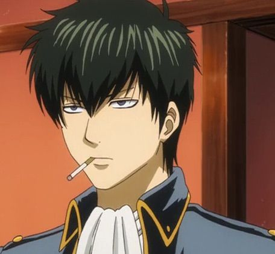
HIJIKATA TOUSHIROU
Hijikata Toushirou 土方 十四郎 é o segundo no comando do Shinsengumi. Apresentado como o cérebro dos Shinsengumi, ele é conhecido como Vice-Comandante Demoníaco「鬼の副長」ele é temido pelos inimigos.
-
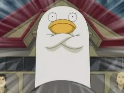
ELIZABETH
Elizabeth (エリザベス) é o extranho Amanto mascote de Katsura Kotarou e membro do Jouishishi. Está sempre ao lado de Katsura e se tornou o ajudante indispensavel de Katsura . Ferozmente leal a Katsura , que o salvou em varias ocasioes. Quando Katsura desapareceu no inicio do arco Benizakura, Elizabeth foi ao encontro dos Yorozuya para pedir ajuda. No episódio 232, foi descoberto que Elizabeth era um(a) espião(a) da raça Renho.
-
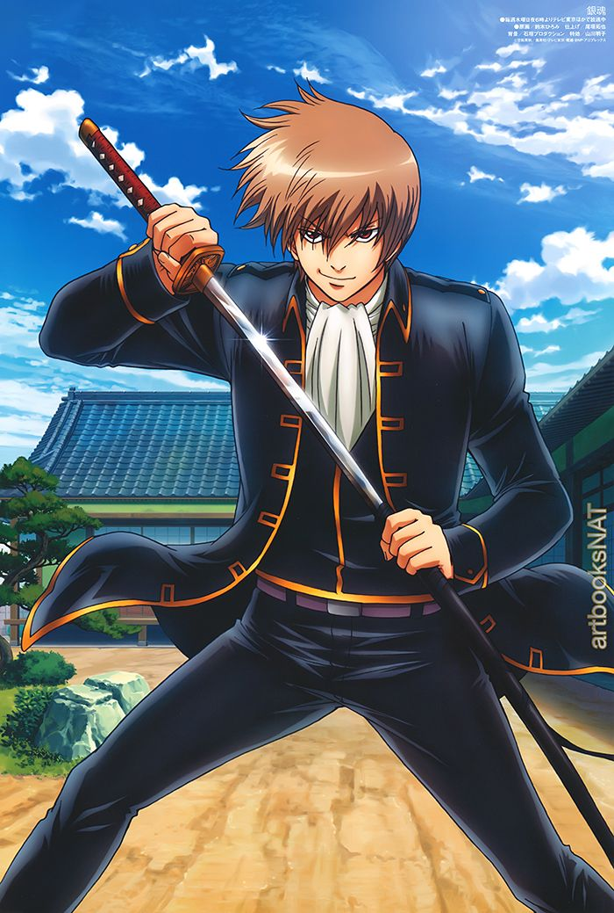
OKITA
Okita Sougo é o ex-capitão da 1ª divisão do Shinsengumi, e foi aprendiz no dojo de Kondou Isao em sua juventude. Ele é o irmão mais novo de Okita Mitsuba, que o criou depois que seus pais faleceram.
-
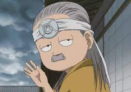
BINBOKUSAI YAGYU
Binbokusai é uma das pessoas que treinou Kyuubei para se tornar um herdeiro samurai da família Yagyuu, de acordo com os desejos de seu filho, Yagyuu Koshinori .
-
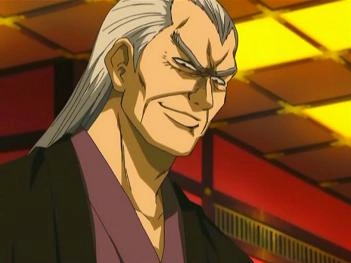
HOUSEN
Housen (鳳仙Hōsen ) era o governante de Yoshiwara e um ex-comandante da 7ª divisão dentro dos Piratas Espaciais Harusame . Ele é o principal antagonista do Yoshiwara in Flames Arc.
-
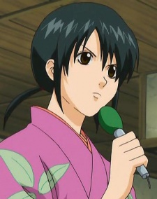
SAKI HANANO
Hanano Ana (花野アナHanano Ana ) por Kusano Hitoyoshi, Hanano Saki (花野咲Hanano Saki ) (o nome como apareceu em uma reportagem ao vivo no episódio 45, capítulo 108 do mangá) é uma repórter da Oedo TV que entrevistou personagens como o Yorozuya , Katsura etc. Ela geralmente tenta permanecer positiva durante suas entrevistas, mas a frustração causada pelos habitantes insanos do distrito de Kabuki muitas vezes a faz perder a paciência, a paciência e o bom senso.
-
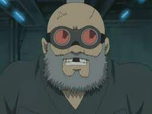
GENGAI HIRAGA
Hiraga Gengai (平賀源外) é o maior mecânico e inventor do Edo. Ele ajudou Sakata Gintoki e Yorozuya em várias ocasiões.
-
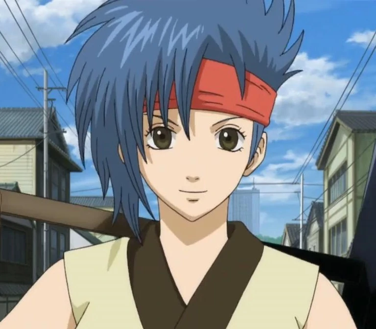
TETSUKO MURATA
Murata Tetsuko (村田鉄子, Murata Tetsuko ) é um ferreiro em Edo . Ela é filha do renomado ferreiro Murata Jintetsu e a irmã mais nova de Murata Tetsuya , ambos falecidos. Ela ajudou Sakata Gintoki e Yorozuya em várias ocasiões.
-
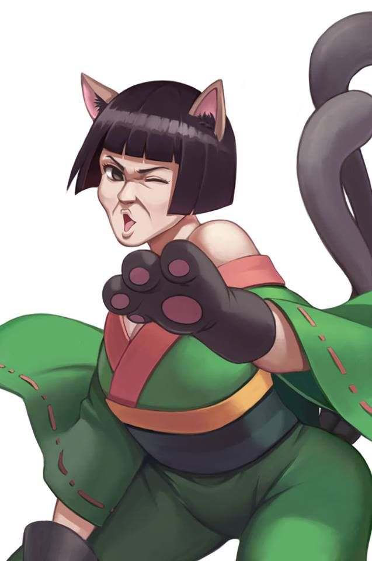
CATHERINE
Catherine (キャサリン) é uma Amanto atualmente empregada no Snack Otose . Ela costumava ser uma ladra de profissão e tem um registro de prisão em seu nome. No entanto, ela está determinada a virar a página depois de fazer uma promessa com Otose de nunca mais roubar, como Otose afirmou no episódio 97 .
-
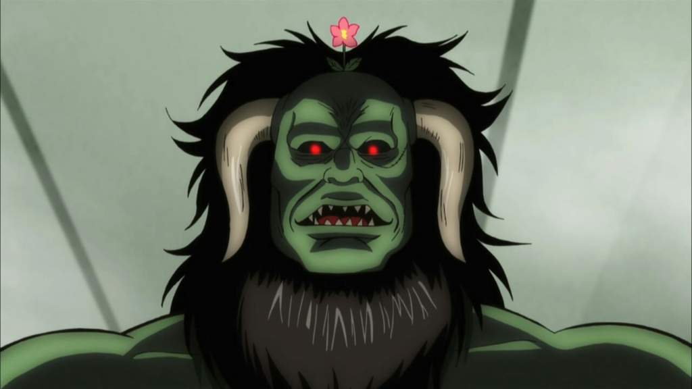
HEDORO
Hedoro (屁怒絽) é um Amanto da Tribo Dakini que foi introduzido pela primeira vez no episódio 47 , dando uma flor para o Yorozuya , quando ele estava se mudando como seu novo vizinho e abriu uma floricultura ( Lição 66 ).
-
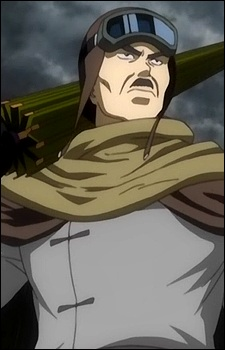
KANKOU
Umibouzu (星海坊主, Umibōzu) é um renomado caçador de alienígenas ou 'Alien Buster' no universo. Seu nome verdadeiro é Kankou (神晃, Kankō), e ele é o pai de Kamui e Kagura .
-
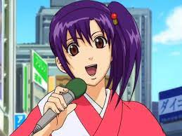
TSU TERAKADO
Terakado Tsuu (寺門通) é um cantor ídolo pop recém-chegado. Ela é carinhosamente conhecida pelos fãs como Otsu ou Otsu-chan.
-
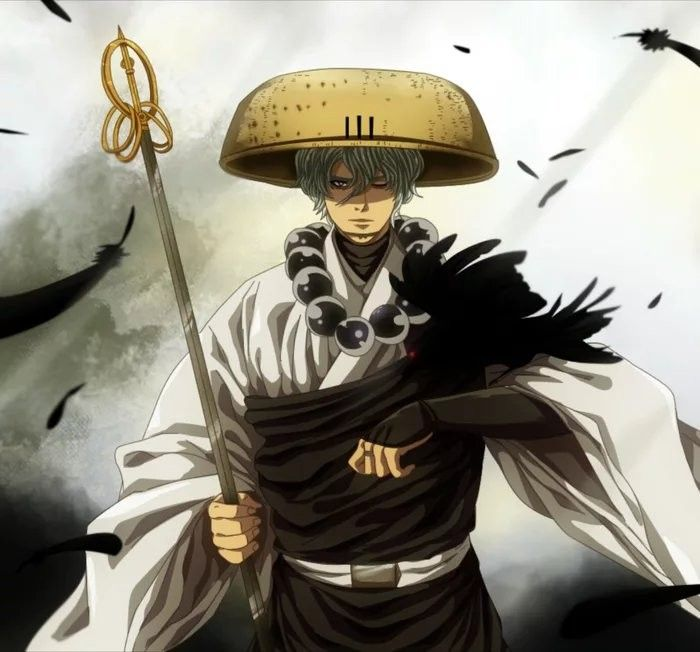
OBORO
Oboro (朧, Oboro ) foi o líder da Escola Tensho durante a ausência do fundador, Utsuro , e também o assassino mais forte dentro do ramo Tenshouin Naraku . Ele reaparece como um grande antagonista na série após sua introdução no arco Courtesan of a Nation .
-
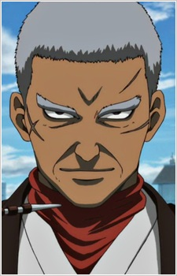
JIROCHOU DOROMIZU
Doromizu Jirochou (泥水 次郎長) era o líder do sindicato yakuza Dobunezumi Group e um dos 4 Devas governantes do distrito de Kabuki antes de deixar seu cargo em favor de sua filha , com quem ele queria passar mais tempo. Ele também carrega velhos laços com Otose e Terada Tatsugorou , com os três sendo amigos íntimos no passado.
-
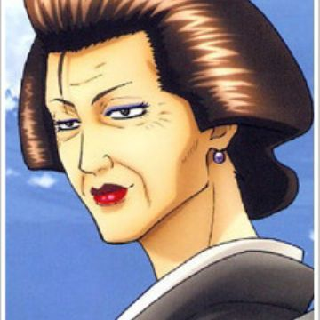
OTOSE
Terada Ayano (寺田 綾乃Terada Ayano ), [1] também conhecida por sua genjina (nome profissional) como Otose (お登勢Otose ), é a proprietária da Otose Snack House. Ela detém o título de um dos 4 Devas do distrito de Kabuki kabuki chou shitennou e dirige a Otose's Snack House no andar térreo abaixo do Yorozuya . Ela frequentemente visita o Yorozuya ou envia um de seus funcionários, Tama ou Catherine , para cobrar o aluguel do Yorozuya.
-
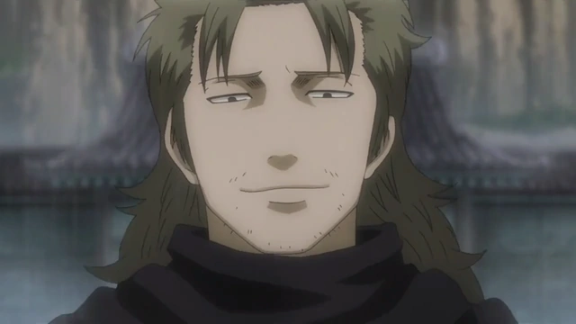
ABUTO
Abuto (阿伏兎) é um membro da 7ª Divisão dos Thunder Guns de Harusame, a unidade de combate mais poderosa sob a liderança de Kamui , dentro do grupo Harusame . Ele é o antagonista secundário de Yoshiwara em Flames Arc .
-
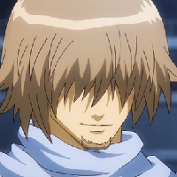
ZENZOU HATTORI
Hattori Zenzou (服部 全蔵) é um ninja altamente qualificado, originalmente do Oniwabanshuu . Ele é frequentemente visto assumindo qualquer tipo de tarefa que pode ou não exigir suas habilidades ninja. Muito parecido com Sakata Gintoki , ele é um tipo de biscate que faz todo tipo de trabalho por dinheiro. Ele é o principal antagonista do Arco Go-Ninja . Ele também é um dos três Grandes Ninjas que lideram os ninjas de Iga.
-
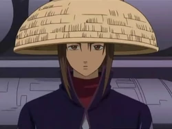
MUTSU
Mutsu (陸奥, Mutsu ) é o segundo em comando da frota mercante Kaientai . Apesar de ser subordinada de Sakamoto Tatsuma , ela é quem dirige a empresa, em vez da líder que geralmente desaparece. Antes disso, ela era a Vice-Comandante da 2ª Divisão do Chidori , um grupo de piratas espaciais que ganhava dinheiro vendendo escravos. No entanto, ao saber de seu plano de matá-la após a morte de seu pai, Mutsu acabou sendo um membro do Kaientai assim que os navios dos piratas foram tomados por Sakamoto.
-
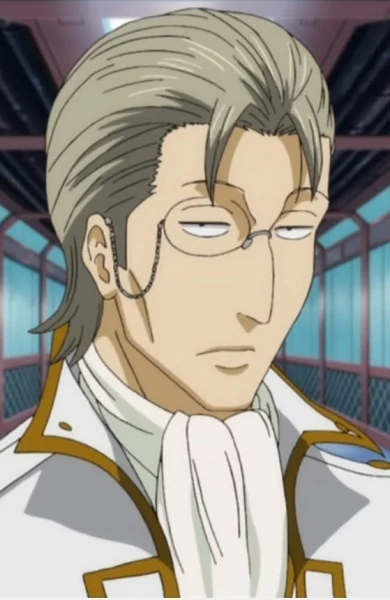
ISABUROU SASAKI
Sasaki Isaburo (佐々木異三郎, Sasaki Isaburo ) era o comandante do Mimawarigumi , uma força policial de elite de Kyoto. Ele era o principal antagonista do Arco Baragaki Embora parecesse odiar o Shinsengumi, ele na verdade manteve sua existência quando foi estabelecido em troca da vida de sua família como punição do Tendoshu . Após a morte de sua família nas mãos de Mukuro , Sasaki a teve como sua assistente e serviu ao Tendoshuu e à Facção Hitotsubashi enquanto planejava iniciar uma revolução contra os corrompidos Bakufu e Tendoshu para restaurar Edo.
-
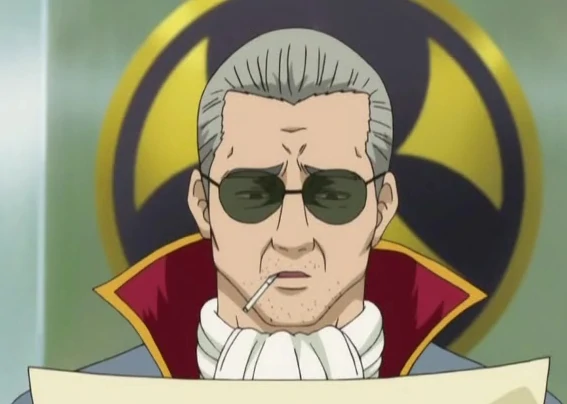
KATAKURIKO MATSUDAIRA
Matsudaira Katakuriko (松平 片栗虎) é o diretor do Shinsengumi e o superior imediato do Comandante Kondo Isao .
-
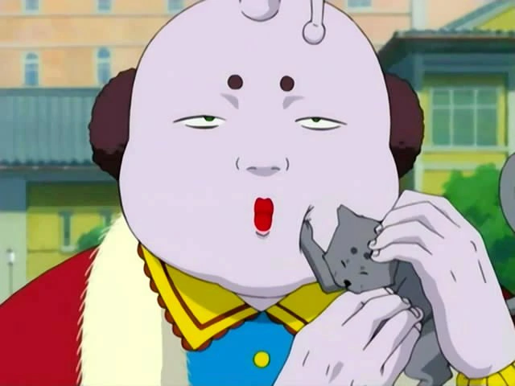
PRINCE HATA
Príncipe Hata (ハタ皇子Hata Ōji ) [nota 1] ou como a maioria dos personagens gosta de chamá-lo, Príncipe Baka (バカ皇子Baka Ōji ) [nota 2] , é um príncipe Amanto do planeta Oukoku. Ele é um personagem levemente recorrente em Gintama. Ele é o irmão biológico mais novo de Barkas (mais conhecido como Shijaku) e Elizabeth.
-
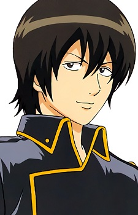
SAGARU YAMAZAKI
Yamazaki Sagaru 山崎 退 é um espião trabalhando para o Shinsengumi. Ele é conhecido pelo seu amor a Badminton, às vezes deixa o Trabalho de lado para jogar (quase sempre ele é pego por seu vice-comandante Hijikata Toushirou 土方 十四郎 e acaba apanhando como resultado) . Ele é tão fã de Badminton que durante o treinamento de artes marciais no Shinsengumi, balança a raquete Badminton.
-
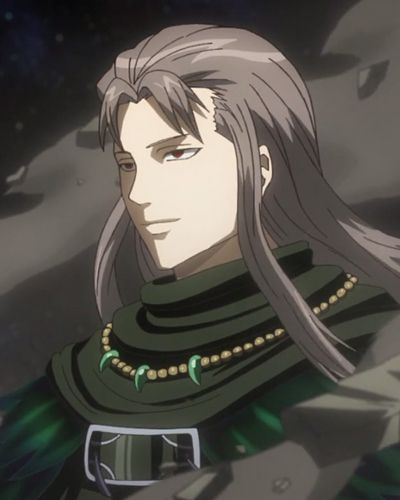
UTSURO
Utsuro foi o fundador e primeiro líder do Tenshouin Naraku antes de Oboro assumir sua posição. Ele é a identidade original e auto de Yoshida Shouyou e agora parte do Tendoshu . Utsuro é um dos antagonistas introduzidos em Farewell, Shinsengumi Arc , e se estabeleceu como o principal antagonista da série Gintama .
-
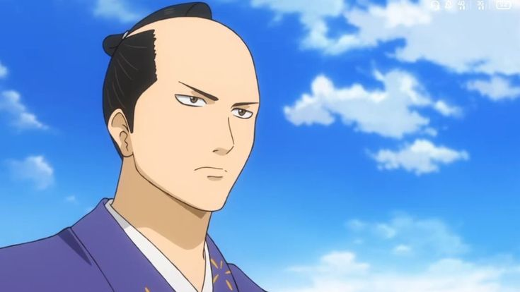
SHIGESHIGE TOKUGAWA
Tokugawa Shige Shige , também conhecido como o Grande General (大将軍Dai Shogun ), foi o 14º Shogun governante de Edo no universo Gintama . Ele também é o irmão mais velho de Soyo-hime .
-
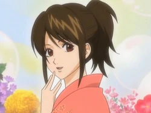
TAE SHIMURA
Shimura Tae (志村妙Shimura Tae ), ou apenas Otae (お妙) (o "お" (O) é um título honorífico usado para se referir às mulheres), é a irmã mais velha de Shimura Shinpachi . Os Shinsengumi quase a aceitaram como a chefe de fato, ou melhor, a consorte de seu chefe Kondou Isao , chamando-a de ne-e-san (姐さん).
-
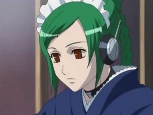
TAMA
Tama (たま, Tama) é uma empregada doméstica que trabalha na Otose's Snack House. Ela costuma receber a tarefa de cobrar o aluguel de Gintoki por Otose quando não está trabalhando.
-
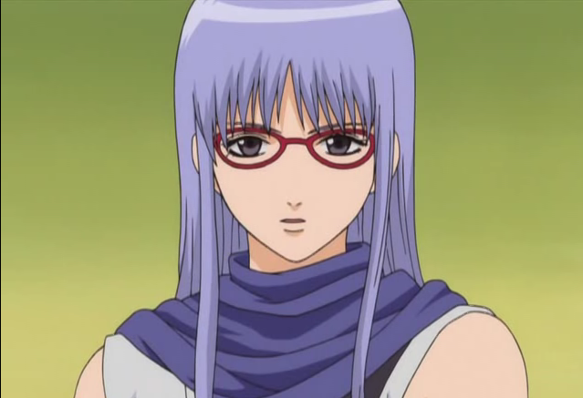
AYAME SARUTOBI
Sarutobi Ayame (猿飛 あやめ, Sarutobi Ayame ), mais conhecido como Sacchan , é um ninja do Oniwabanshuu por treinamento, mas atualmente trabalha como assassino. Ela também tem um emprego de meio período no Kunoichi Café.
-
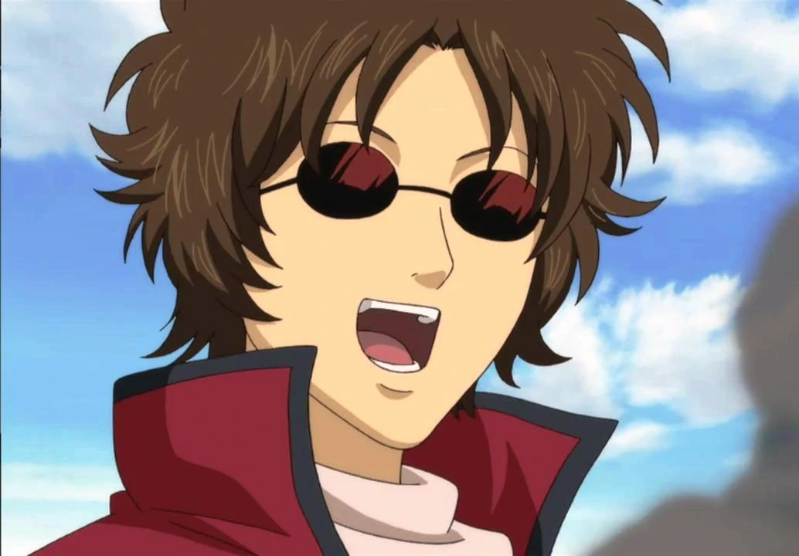
TATSUMA SAKAMOTO
Sakamoto Tatsuma (坂本 辰馬, Sakamoto Tatsuma ) é o líder da Frota Comercial Kaientai . Apesar de ser rotulado de "idiota natural" [1] por todos ao seu redor, Sakamoto foi um dos samurais que lutou ao lado de Gintoki na Guerra Joui.
-
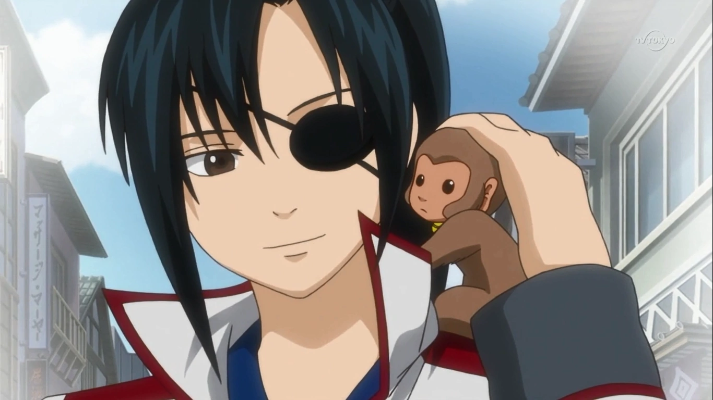
KYUUBEI YAGYUU
Yagyuu Kyuubei (柳生 九兵衛, Yagyū Kyūbei ) é a sucessora do nome de família Yagyuu, filha de Yagyuu Koshinori e neta de Yagyuu Binbokusai . Ela foi criada como um homem, seguindo o código do clã Yagyuu, mas em anos posteriores decidiu não seguir nem a feminilidade nem a masculinidade, mas viver apenas como "Yagyuu Kyuubei". Ela foi a principal antagonista do Arco Yagyuu .
-
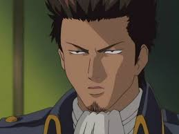
ISAO KONDOU
Kondou Isao (近藤勲Kondō Isao ), também conhecido como Gorilla (nome latino, Gorilla Gorilla Gorilla ), é o ex-comandante do Shinsengumi . Quando ele não estava trabalhando (o que era frequentemente o caso, o vice-comandante, Hijikata Toushirou , sendo quem o cobria na maior parte do tempo), ele estava ocupado perseguindo a irmã de Shinpachi, Shimura Tae , ganhando o apelido de perseguidor de gorila.
-
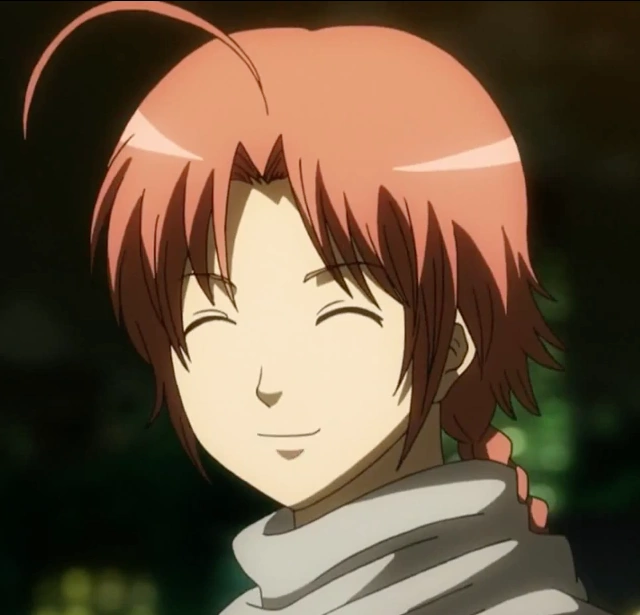
KAMUI
Kamui (神威, Kamui ) é um membro da tribo Yato . Ele é filho de Umibouzu e Kouka , e irmão mais velho de Kagura . Ele foi um grande antagonista de Yoshiwara in Flames Arc e depois de sua aliança com Takasugi , tornou-se por um tempo um dos principais antagonistas da série. Devido às suas ações, ele pode ser considerado o antagonista central de Gintama.
-
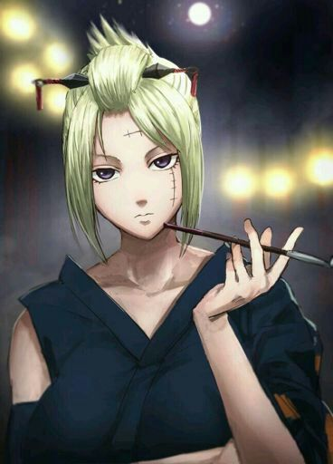
TSUKUYO
Tsukuyo (月詠, Tsukuyo ), também conhecido como a Cortesã da Morte (死神太夫, shinigami tayuu ), é um ninja altamente qualificado, especializado no uso de kunai , tendo treinado sob o infame assassino e então Líder do Hyakka . , Jiraia_ _ Ela é a atual líder dos Hyakka , os Guardiões de Yoshiwara (Guardiões do Calouro), um esquadrão feminino de aplicação da lei anteriormente implantado por Housen .